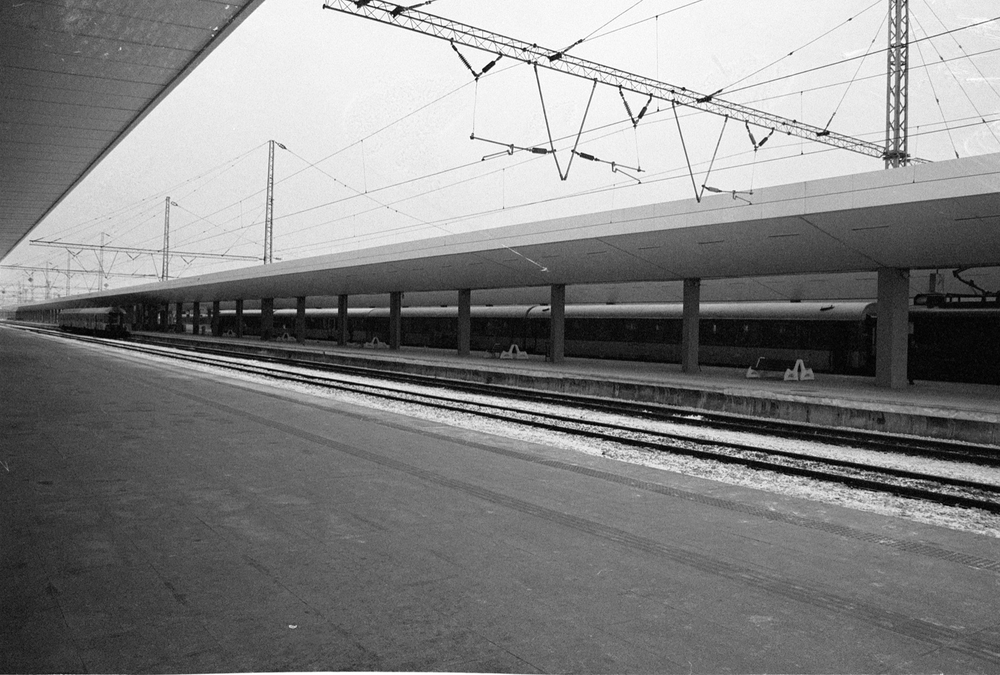

ARCHIVE
Analogue street photography. Work in progress.
A quiet index for scanned film photographs. More images will be added as the archive is selected and sequenced.
ABOUT
Back to index
ARCHIVE
A quiet index for scanned film photographs. More images will be added as the archive is selected and sequenced.
ABOUT
Back to index